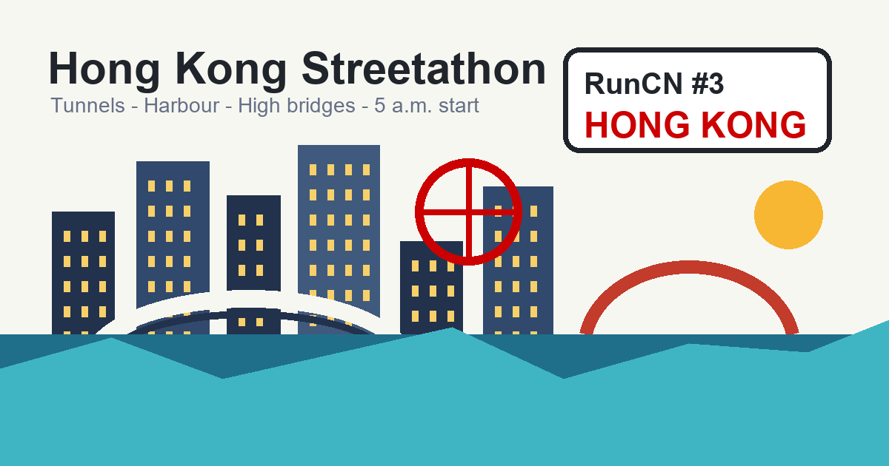

Hong Kong turned a marathon into a tunnel-and-bridge city tour
Before dawn on November 23, 2025, the Kerry Hong Kong Streetathon sent runners into expressway tunnels, onto elevated roads, across a sea bridge, and through a city still carrying the old Pearl of the Orient filter.

Kerry Hong Kong Streetathon is a smaller, stranger kind of city marathon. It starts at 5 a.m., sends runners through expressway tunnels usually reserved for cars, opens briefly onto Victoria Harbour, crosses a sea bridge, then finishes with one more tunnel and a late uphill punch.
For me, it was also the final race-sized stop of a two-and-a-half-month China trip before flying back to the United States from Hong Kong that night.
Kerry Hong Kong Streetathon, a fight with tunnels and elevated roads
Hong Kong, China
The full marathon at the Kerry Hong Kong Streetathon started at 5 a.m., which is early even by marathon standards. I got out of the capsule at three and ate a little bread just to put something in my stomach. Most people in the capsule hotel were foreigners, and the Austrian woman I had met the day before was also up early. Seeing me fully geared up, she offered to take a pre-race photo for me, a small bit of encouragement before heading out.

Once I left Windsor Mansion, the street was much quieter, though there were still taxis looking for passengers.

Hong Kong's MTR opened unusually early that day, apparently for the marathon. Once I got on, I realized the train had basically become a race train. The whole car was full of runners. Some were sleeping, some were staring quietly into space, and colorful carbon-plated shoes were flashing everywhere.


At Tin Hau Station, I followed the crowd toward the start. Because I have run so many races in the United States, I rarely check a bag anymore. This time, by accident, that helped me avoid one of the big pain points of the race.
Near the start there was a small area where volunteers were painting designs on runners, which was pretty fun. Several Hong Kong volunteers were busy and cheerful there.

The start was on the elevated road near North Point in East Coast Park Precinct, so we had to climb a bit before reaching the start line.

The approach to the start required a detour. Technically you could cut through the middle barrier, but Hong Kong people felt pretty disciplined. Most runners just followed the signs and went around properly. It reminded me of how orderly people were with elevators and trains in Singapore.

Not long after the start, the course sent us into the Central-Wan Chai Bypass.


It is an important express route on Hong Kong Island. Cars usually fly through it, and people normally never get to go inside.
Inside the tunnel, it was stuffy. The air did not move much, and the temperature felt higher than outside. It was like running through a long pipe that never seemed to end.


Once we came out, wind rushed in and everyone immediately felt lighter. Looking left, I could see the Hong Kong Observation Wheel. It is one of the most visible landmarks on the Central waterfront, lit in red and blue, only a few dozen meters from the water.

From there, the route ran along Victoria Harbour and the Central Harbourfront. The night view opened up beautifully: Kowloon's towers across the water, small boats moving on the harbor, and air that felt much better than inside the tunnel. Going from the stuffy underground city to an open waterfront wind tunnel was a clear switch, and one of the most memorable parts of the Streetathon course.

After turning around near the Ferris wheel, the route sent us back into the Wan Chai bypass tunnel. It was basically the same tunnel again. The air was still stuffy.

After coming out, we ran east along the elevated road by the Wan Chai North waterfront. The sky was slowly getting brighter. I used the bathroom around this stretch, then kept going and watched the light across Victoria Harbour begin to soften.


Next, the course took us into the Eastern Harbour Crossing. This tunnel is pretty long, a little over two kilometers, and it was tough. The grade changes a bit, the air is not exactly fresh, and once you get out, you are in Kowloon.


By the time I came out of the Eastern Harbour Crossing, the sky had brightened a lot. The road opened up, with towers from Kowloon Bay and Kwun Tong ahead. The road was wide, and the aid station was waiting. The 14.8 km marathon marker was right there. Without paying much attention, I had already reached around 15K.


By this point it was fully light. The bridge ahead was the Tseung Kwan O Cross Bay Bridge, one of Hong Kong's newest cable-stayed bridges. Usually only vehicles can use it, but that day it belonged to us runners for the first time. Running into the sea breeze on the bridge, with a golden sky on the left and the morning bay on the right, felt pretty special.


After crossing the bridge, we turned around near the Tseung Kwan O industrial area. Right there, I spotted another runner wearing an Arsenal jersey.


After the turnaround, we ran back toward the city along the water. The pretty view did not last long before another dark section took over: the Tseung Kwan O Tunnel. It was not short, and the air was stuffy again. I counted the overhead lights as I ran, using that tiny ritual to keep my rhythm.

Inside the tunnel, we met the half-marathon runners. Some were wearing cosplay outfits, and the red and green colors looked especially bright against the gray tunnel.

The moment we burst out of the tunnel, sunlight hit us again. We were already close to 25K.
Around East Coast Park, we finally reached the Streetathon's famous mega aid station. It was almost a small food market: bread, fruit, energy soup, soy milk, so many options that if you stopped too long you might start wondering whether you were still in a race.


No one seemed in a rush there. People lined up for food, chatted, and took photos. This was probably the part of the whole race that felt most like a real street marathon.
After leaving the aid station, the route followed the Kwun Tong waterfront, then passed a riverside stretch before slowly climbing back onto an elevated road.

In the distance, I could see a very futuristic blue oval building. That is Kai Tak Sports Park, still under construction at the time. It will become Hong Kong's largest integrated sports venue and a new base for international events.


There was almost no shade on this elevated section. Once the sun came out, the heat pushed right up. The elevated road was also long, with that feeling that no matter how much you ran, it would not end. Luckily, around 33K there was another aid station holding everyone together. A lot of runners stopped there to drink and reset.


After that, we finally came down from the elevated road, and the route suddenly became more interesting, with a more genuine Hong Kong city feel. Especially when we returned to Kwun Tong Promenade, where I had picked up my packet the day before, the scene was lively. There were booths, music, and a girl group handing water to runners and cheering.


Farther ahead, the route finally moved into the neighborhood streets. Buildings got denser and there were more pedestrians. The big sign reading Dai Keung Godown really stood out. It had that very local Hong Kong look.


This was a turnaround. After turning back, the route took us onto elevated roads again, getting closer and closer to Kai Tak Sports Park.


Then came the highlight from the race promotion: the Yau Ma Tei section of the Central Kowloon Route tunnel. This tunnel is one of Hong Kong's major recent infrastructure projects. It had not officially opened to traffic yet, so getting to run inside before cars could use it was the most special experience of the race.


The tunnel was long. The lighting and ventilation were decent, but the feeling of running into the inside of a future city was unique. The good part did not last long, though. The final test arrived right before the finish. The tunnel itself rolled gently, but as soon as we came out, we hit a long climb. You had to survive that unreasonable hill before you could see the finish arch.


When I crossed the finish line, my watch stopped just over five hours. All the fatigue turned into one simple thought: finally done. For a course with this much difficulty, finishing was the win.


At the finish, the medal was handed to me by local students in neat blue uniforms. They were all very serious and very cute.

Walking toward the exit, I saw a lot of people lining up for massage. Even more dramatic was the bag-check area. I heard the system had problems, and everyone was searching for their bags like a giant live-action lost-and-found experience. The whole scene was chaotic.


Luckily, the route back to the MTR was smooth, with clear signs the whole way. Back at the capsule hotel, I ran into the Spanish guy from the day before, and he congratulated me on finishing.
After a quick shower, I dozed off in the capsule for a while. When I opened my eyes again, it was time to go to the airport. The marathon was still sitting in my legs, Hong Kong's wind was already receding behind me, and my two-and-a-half-month China trip was coming to an end.

Before the 5 a.m. start
The race day was the headline, but Hong Kong had already been working on me the day before: crossing from Shenzhen, dragging huge suitcases through Tsim Sha Tsui, picking up the race packet in Kwun Tong, then walking through Causeway Bay, Victoria Park and Victoria Harbour at night.
Preface
Wrapping up the trip with a run in Hong Kong
Hong Kong, China
My two-and-a-half-month trip in China was getting close to the end.
During that final week, my father-in-law, mother-in-law, and Third Uncle were incredibly warm. They took my parents and my aunt around a few places near Foshan.

That weekend, I would be flying back to the United States from Hong Kong, so crossing from Shenzhen into Hong Kong made sense. With my father-in-law leading the way, we also stopped by Window of the World, a light little ending to a long trip.

Early the next morning, I officially entered Hong Kong through Shenzhen Bay Port. Since I already had a flight ticket to the United States, I did not need a Hong Kong and Macau travel permit.

Of course, there was another important reason for the trip: I was going to run the Kerry Hong Kong Streetathon. The timing was almost too perfect. It felt like a memorable closing note for this long, full China trip.

Hong Kong, the old Pearl of the Orient
Hong Kong, China
To be honest, people from my generation have a bit of a filter for Hong Kong. We grew up on Hong Kong movies, TV dramas, and Cantopop: Stephen Chow's nonsense comedy, Andy Lau's heroic cool, all of it.
From the cassette tapes of the Four Heavenly Kings to TVB theme songs, from neon-lit Kowloon to the skyline around Victoria Harbour, Hong Kong felt like the definition of modern, stylish, fast-moving city life.

If you zoom out a little, Hong Kong's history and culture really are special. It went through a colonial period and then a long stretch of fast development.

Chinese and Western cultures mixed here. The language, buildings, and way of living all carry that unmistakable Hong Kong flavor. Looking at the city now, the old filter has faded a bit, and what is left feels more real after the spell breaks.
This was my first proper visit to Hong Kong. Passing through before did not count. I used this very niche Kerry Hong Kong Streetathon as a way to finally get to know the city a little.

Why do I call it niche? Before the race, I asked a local Hong Kong running expert about it, and even she had never heard of the event.
Tsim Sha Tsui, Causeway Bay, and Victoria Harbour
Hong Kong, China
The bus from Shenzhen Bay to K11 in Tsim Sha Tsui took about forty minutes. As soon as I got off, I realized something: Hong Kong streets are narrow, and my two huge suitcases plus one giant backpack looked painfully out of place. I dragged everything toward the capsule hotel in Windsor Mansion.

Windsor Mansion was covered in bamboo scaffolding and under renovation, which did not exactly inspire confidence. The entrance was so small I almost missed it. Inside, the building felt so old that I immediately thought of Chungking Mansions, with a group of South Asian guys gathered near the elevators.
The capsule hotel would not let me check in until after four. Luckily, a kind Spanish guy helped me open the door, so I could finally put down all that oversized luggage.


After dropping my stuff, I took the MTR to Kwun Tong Promenade for packet pickup. You can use Alipay directly on the Hong Kong subway, which is pretty convenient. I also bought an Octopus card as a backup and exchanged a little Hong Kong cash, so I was basically covered for every payment situation.


My first impression of Kwun Tong Promenade was really good: dense office towers on one side, runners and walkers on the road, people strolling along the water, and a sea breeze coming through.


There was graffiti on a lot of the walls, and the race expo was set up under the elevated road. The atmosphere was lively. The volunteers were efficient, I had booked a pickup time in advance, and there was almost no line. Some volunteers could speak Mandarin too, so the whole process was smooth.


After picking up my race packet, I figured the next day's start was at Victoria Park, so I went to scout it on the way. From Kwun Tong I took the MTR to Causeway Bay and passed Tin Hau Station. For a second, my brain automatically started playing Next Stop, Tin Hau, and scenes from Young and Dangerous flashed back too. Very much an era thing.

Coming out of Causeway Bay Station, I was right at Hong Kong's Times Square, and the crowd was honestly a bit much. When I looked up, the narrow triangular old building glowing in the sunset was right there. That is the Lee Garden Road tong lau, a classic symbol of Hong Kong's dense urban look because it is so thin and sharp that tourists always photograph it.

I found a McDonald's to fill my stomach first. I was worried I might not have enough cash, so I went back to the Bank of China ATM in the station and took out a little more. In reality, most places in Hong Kong now take Alipay, which is both easy and painless.


Walking from Times Square to Victoria Park, the city was loud, but the park suddenly got quiet. It felt like a smaller version of New York's Central Park. Traffic and crowds were only a few steps away, yet inside people were strolling, walking dogs, and running slowly. Hong Kong people really know how to find their rhythm.


Keep walking toward the water and you reach East Coast Park Precinct. This place has become pretty popular in the last couple of years. The waterfront path gives you a clear view of the Kowloon skyline.


The spiral-looking structure by the water is called The Lookout. Planning started in 2015, and later it became a landmark in the Kwun Tong waterfront redevelopment. This used to be an industrial pier area, now turned into public waterfront space. The tower is meant to suggest setting sail, and it showed up several times in The Queen of News 2.


The evening light was beautiful. The whole coastline turned golden. People were walking dogs, pushing kids, taking photos. I also met a few guys who were running the marathon the next day, and we helped each other take pictures.


After packet pickup, I took the MTR back through the Cross-Harbour Tunnel area. When I entered the station it was not dark yet, but by the time I came out at Tsim Sha Tsui, Hong Kong had fully switched into night mode.

Right in front of me was the Avenue of Stars. The wind from Victoria Harbour carried a little salty smell. I had barely walked two steps before I realized how crowded it was. Everyone had their phones up taking photos.

The Avenue of Stars is where Hong Kong shows the world its golden age of cinema. The waterfront sculptures, celebrity handprints, and giant Hong Kong Film Awards statue all say the same thing: this city once built one of Asia's most brilliant film industries.

The color of the sky slowly moved from gold to orange-red, then into purple, and finally deep blue. Across the water, Central and Admiralty had already lit up.


Lit-up boats drifted slowly through Victoria Harbour: sailboats, small yachts, and one red-lit junk that looked like it had sailed straight out of a Hong Kong movie.


I stood by the railing, surrounded by tourists taking photos. On the way back to the capsule hotel, I crossed Nathan Road.

That road feels like it never ends, stretching straight ahead forever. It was full of car lights, shadows of pedestrians, and neon that kept flashing until your eyes got tired.
Back at Windsor Mansion, the style switched again. The building was still old and narrow. Once I pushed open the capsule hotel's door, though, it became quiet again.

I ordered curry rice at a small shop in Tsim Sha Tsui and added a mango juice, a bit of pre-race fuel. After eating, I crawled into my tiny capsule and pulled the curtain shut. Outside, Hong Kong was still blazing with lights. Inside, I had to start mentally preparing for a 5 a.m. start.

Postscript
From the Pearl of the Orient to life on the other side
Hong Kong, China
That night on the Airport Express, I felt a little dazed. Outside the window, Hong Kong slowly moved away behind me. The high-rises were still packed tight, and the subway, footbridges, tunnels, and elevated roads stacked over one another like a machine that never shuts down.
I was carrying the medal I had just earned, and I started replaying the past two and a half months in China. The clearest feeling from that trip was this: China is developing incredibly fast.
In mainland cities, new subway lines, high-speed rail, shopping malls, and apartment blocks keep appearing one after another. Scan a phone and you can handle food, housing, transport, and daily life. The efficiency is maxed out.
Hong Kong is still prosperous, and the Victoria Harbour night view is still beautiful. But the childhood movie filter has definitely faded a little. I noticed more old buildings, crowded trains, and narrow streets.
Thinking about flying back to the United States gave me a subtle sense of switching worlds. Infrastructure there is honestly not that advanced: older subways, older highways, slower paperwork. But there is also more blank space, more room to breathe.
When the plane took off, my China trip officially pressed pause. The roads I had run, the subways I had taken, the wind over Victoria Harbour, the meals around the table in Shunde, and the way my family waved goodbye at the border all got packed away in my luggage for now.


After landing in Chicago for my connection, the trip gave me one small surprise: I ran into Cindy and Jim at the airport. After crossing half the world back from Asia, seeing familiar family in the terminal felt like the journey and daily life had quietly connected in a circle.
Siqi came to the airport to pick us up and take us home. Next, I would return to another rhythm of life. But I know these two and a half months will keep coming back in many small moments later, replaying bit by bit.
- End -
Words | Arsenan
Photos | Arsenan
Design | Arsenan